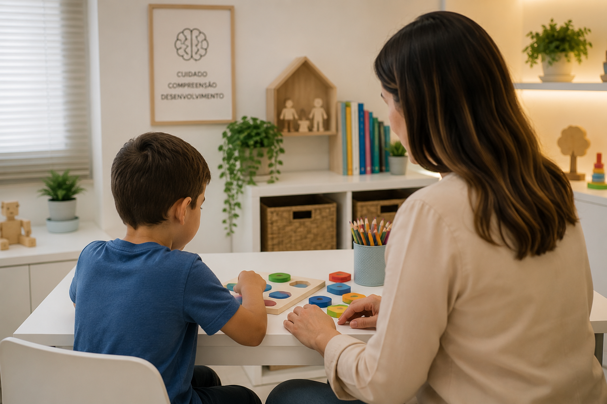

Atendimento psicológico para crianças, adolescentes e adultos com acolhimento, ética e Terapia Cognitivo-Comportamental.
Agende sua consultaPsicóloga clínica com atuação em Terapia Cognitivo-Comportamental (TCC).
Acredito que cada pessoa merece um espaço seguro para compreender suas emoções, desenvolver novas formas de enfrentar os desafios da vida e construir uma relação mais saudável consigo mesma.
Realizo atendimento para crianças, adolescentes e adultos, oferecendo um acompanhamento acolhedor, ético e baseado em evidências científicas.
A Terapia Cognitivo-Comportamental é uma abordagem baseada em evidências científicas que auxilia na compreensão dos pensamentos, emoções e comportamentos, promovendo mudanças que favorecem uma vida mais leve e equilibrada.
Identifique pensamentos automáticos e desenvolva formas mais saudáveis de interpretar as situações do dia a dia.
Aprenda estratégias para compreender, acolher e regular suas emoções de maneira saudável.
Desenvolva novos hábitos e atitudes alinhados aos seus valores e objetivos de vida.
Cada pessoa possui uma história única. O acompanhamento psicológico oferece um espaço acolhedor para compreender emoções, desenvolver recursos internos e enfrentar os desafios da vida com mais equilíbrio.
Algumas frases representam sentimentos e situações comuns vivenciadas por muitas pessoas. Elas não correspondem ao relato de uma pessoa específica e possuem caráter informativo e reflexivo.
Alguma dessas situações fez sentido para você?
Quero conversar sobre issoO acompanhamento é realizado de forma individualizada, respeitando as necessidades e a história de cada pessoa.
Um espaço lúdico e acolhedor para favorecer o desenvolvimento emocional da criança.
Acompanhamento voltado aos desafios dessa fase, promovendo autoconhecimento e fortalecimento emocional.
Atendimento para quem busca compreender suas emoções, superar dificuldades e viver com mais equilíbrio.
Abordagem baseada em evidências científicas, focada na relação entre pensamentos, emoções e comportamentos.
A rotina nem sempre permite deslocamentos ou horários presenciais. Por isso, também realizo atendimentos psicológicos online, proporcionando um espaço de escuta e acolhimento onde você estiver.
As sessões são individuais, têm duração aproximada de 50 minutos e acontecem por videochamada, utilizando o Zoom ou o WhatsApp, conforme combinado previamente.
O atendimento é realizado com o mesmo compromisso ético e técnico do atendimento presencial, respeitando o sigilo profissional e as orientações vigentes do Conselho Federal de Psicologia.
Para saber sobre disponibilidade de horários e valores, entre em contato pelo WhatsApp.
Agendar atendimento online
Com um olhar cuidadoso e baseado em evidências, a avaliação neuropsicológica auxilia na compreensão do funcionamento cognitivo, emocional e comportamental da criança.
Esse processo contribui para identificar dificuldades, potencialidades e necessidades específicas, ajudando a orientar a família, a escola e os próximos passos do cuidado.
Entre em contato para mais informações.
Confira algumas informações importantes sobre o funcionamento do acompanhamento psicológico.
A primeira sessão é um momento de acolhimento e escuta. Conversaremos sobre sua história, sua demanda e os objetivos do acompanhamento psicológico.
As sessões têm duração aproximada de 50 minutos e a frequência é definida conforme as necessidades de cada pessoa.
Os atendimentos podem ser realizados de forma presencial ou online, de acordo com sua preferência e disponibilidade.
A psicoterapia infantil utiliza recursos lúdicos, como brincadeiras, desenhos e histórias, respeitando a fase de desenvolvimento da criança.
Sim. Sempre que necessário, são realizados momentos de orientação aos pais, respeitando o sigilo e o processo terapêutico da criança.
Você não precisa esperar que o sofrimento se torne intenso. A psicoterapia também é um espaço de autoconhecimento, prevenção e desenvolvimento emocional.
Sim. Todo atendimento psicológico é conduzido de forma ética e sigilosa, conforme o Código de Ética Profissional do Psicólogo.
Entre em contato pelo WhatsApp para tirar dúvidas e verificar os horários disponíveis.
Agendar pelo WhatsAppVocê não precisa enfrentar tudo sozinha(o).
reconhecer que merece cuidado. A terapia é um espaço de acolhimento, escuta e transformação. Quando você estiver pronta(o), estarei aqui para caminhar ao seu lado.
Será um prazer acolher você. Entre em contato para tirar dúvidas ou agendar sua consulta.